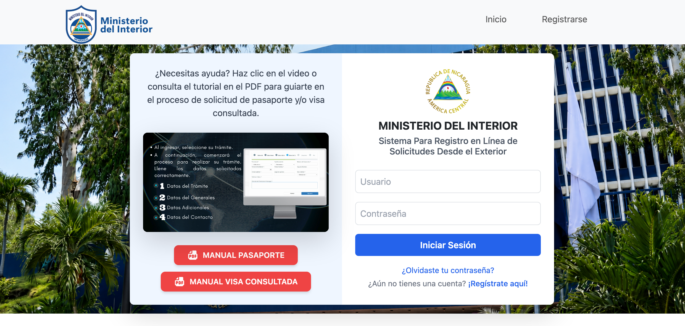

{{ t.kicker }}
{{ t.headline }}
{{ t.subtitle }}
{{ t.community.body }}
{{ t.community.redditLabel }}{{ t.start.kicker }}
01
{{ t.how.title }}
{{ sectionTags.how }}{{ t.how.intro }}
{{ t.portal.official }}
{{ t.portal.note }}
{{ portalUrlFull }}
{{ t.portal.pasteNote }}
{{ t.portal.botCheckNote }}

{{ t.start.timeLabel }}
{{ t.start.timeValue }}
{{ t.start.timeNote }}
{{ t.how.processTitle }}
{{ step.n }}
{{ step.title }}
{{ step.body }}
{{ step.detourNode }}
02
{{ t.documents.title }}
{{ sectionTags.documents }}{{ t.documents.intro }}
- ▸ {{ doc }}
{{ t.documents.note }}
03
{{ t.consulates.title }}
{{ sectionTags.consulates }}{{ c.label }}
{{ c.note }}
{{ t.consulates.note }}
{{ t.consulates.fullListTitle }}
{{ t.consulates.fullListNote }}
{{ r.note }}
{{ worldNoteNode }}
04
{{ t.canada.title }}
{{ sectionTags.canada }}{{ t.canada.body }}
- {{ s.n }} {{ s.text }}
{{ t.canada.contactWhatsapp }}
{{ t.canada.contactEmail }}
- {{ s.n }} {{ s.text }}
{{ t.canada.westernUnion.intro }}
- {{ s.n }} {{ s.text }}
{{ t.canada.westernUnion.tip }}
{{ t.canada.note }}
05
{{ t.stuck.title }}
{{ sectionTags.stuck }}{{ t.stuck.pilotAlert.title }}
{{ stuckPilotBody1 }}
{{ t.stuck.pilotAlert.body2 }}
{{ t.stuck.pilotAlert.goodNews }}
{{ it.icon }}
{{ it.lead }}
{{ it.body }}
06
{{ t.tips.title }}
{{ sectionTags.tips }}- ✓ {{ tip }}
{{ t.tips.whatsapp.title }}
{{ t.tips.whatsapp.body }}
{{ t.tips.whatsapp.note }}
{{ t.tips.whatsapp.warning }}
07
{{ t.faq.title }}
{{ sectionTags.faq }}{{ item.q }}
{{ item.body }}
08
{{ t.nicaragua.title }}
{{ sectionTags.nicaragua }}{{ t.nicaragua.lead }}
{{ t.nicaragua.facts.photo }}
{{ t.nicaragua.facts.delivery }}
{{ t.nicaragua.facts.validity }}
{{ t.nicaragua.docsTitle }}
- ▸ {{ d }}
{{ t.nicaragua.processTitle }}
- {{ s.n }}. {{ s.text }}
{{ t.nicaragua.costsTitle }}
{{ row.label }}
{{ row.value }}
{{ nicaraguaNote }}
{{ t.inTheNews }}
{{ sectionTags.news }}